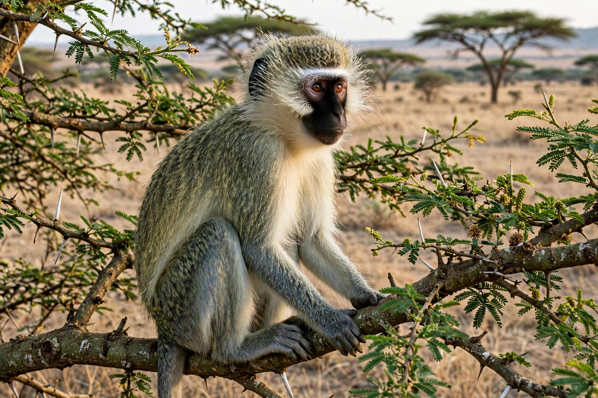

Vervet monkey
| Vervet monkey | |
|---|---|
 | |
| Kingdom | Animalia |
| Order | Primates |
| Family | Cercopithecidae |
| Genus | Chlorocebus |
| Species | C. pygerythrus |
| Range | Southern and East Africa; introduced to the Caribbean |
The vervet monkey (Chlorocebus pygerythrus), or simply vervet, is an Old World monkey of the family Cercopithecidae native to Africa. Vervets live in savanna, woodland and riverine habitats across southern and eastern Africa, usually near water, in social troops of ten to seventy individuals. They are famous in comparative psychology for their acoustically distinct alarm calls for different predators.
Description
Vervets have black faces framed by white cheek fringes, grizzled grey-green upperparts, and pale underparts. Males are larger than females and have a bright turquoise-blue scrotum and red penis — conspicuous signals used in social displays. The tail is long, with a dark tip in most populations.
Behaviour
Vervets are diurnal and both arboreal and terrestrial, spending much of the day foraging on the ground for fruit, leaves, seeds, flowers and invertebrates. Troops have dominance hierarchies in both sexes; females remain in their natal troop for life and form the stable core, while males emigrate between troops. Grooming, coalitionary support and reconciliation after conflicts are important social behaviours, and vervets have been a major model for the study of primate social cognition and social learning, including intergroup transmission of food preferences.
Alarm calls
In classic field experiments in Kenya's Amboseli National Park, Robert Seyfarth, Dorothy Cheney and Peter Marler showed that vervets give acoustically distinct alarm calls for leopards, eagles and snakes. Playback of a call — with no predator present — elicits the appropriate escape response: monkeys run into trees for a leopard call, look up and dive into bushes for an eagle call, and stand bipedally scanning the ground for a snake call. Infants give calls to broad categories of stimuli and gradually refine their usage, suggesting learning. The calls are considered functionally referential — among the clearest animal analogues of words — because they appear to denote external objects rather than merely expressing arousal.
Relationship with humans
Vervets are adaptable and often raid crops and tourist sites; they are regarded as pests in parts of their range. Vervets were introduced to Barbados, Saint Kitts and Nevis and other Caribbean islands in the 17th century. The species is widely used in biomedical research, and its genome has been sequenced. The vervet is listed as Least Concern by the IUCN, though some local populations are declining.